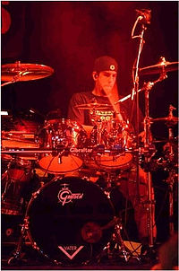
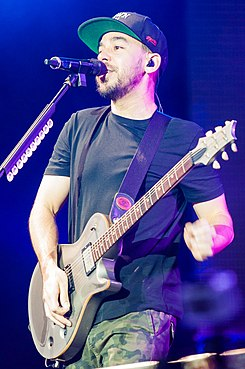
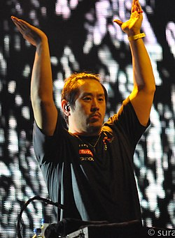

Chester Charles Bennington (Phoenix, 20 de marzo de 1976-Palos Verdes, 20 de julio de 2017) fue un músico, cantante, compositor y actor estadounidense, conocido por haber sido el vocalista principal y compositor de la banda Linkin Park, además de otros grupos como Dead By Sunrise, Grey Daze, Stone Temple Pilots.
En sus primeros años de adolescencia, Rob Bourdon tocó en algunas bandas con sus amigos. Fue en esa época que conoció a su actual compañero de banda Linkin Park, Brad Delson, y tocaron juntos durante un año en un grupo llamado Relative Degree.
Michael Kenji «Mike» Shinoda (Agoura Hills, California, 11 de febrero de 1977)1 es un músico multinstrumentista, cantante, compositor, rapero y productor discográfico estadounidense, integrante de la banda Linkin Park y proyecto alternativo en solitario Fort Minor.
Joseph Hahn, conocido también como Joe Hahn, Chairman Hahn o Mr. Hahn (Dallas, Texas, 15 de marzo de 1977) es un director de videos musicales, también conocido como el DJ en la banda Linkin Park. Joe tiene un alter ego llamado Remy.
Joseph Hahn, conocido también como Joe Hahn, Chairman Hahn o Mr. Hahn (Dallas, Texas, 15 de marzo de 1977) es un director de videos musicales, también conocido como el DJ en la banda Linkin Park. Joe tiene un alter ego llamado Remy.
Chester Charles Bennington (Phoenix, 20 de marzo de 1976-Palos Verdes, 20 de julio de 2017)
fue un músico, cantante, compositor y actor estadounidense, conocido por haber sido el vocalista principal
y compositor de la banda Linkin Park, además de otros grupos como Dead By Sunrise, Grey Daze,
Stone Temple Pilots.